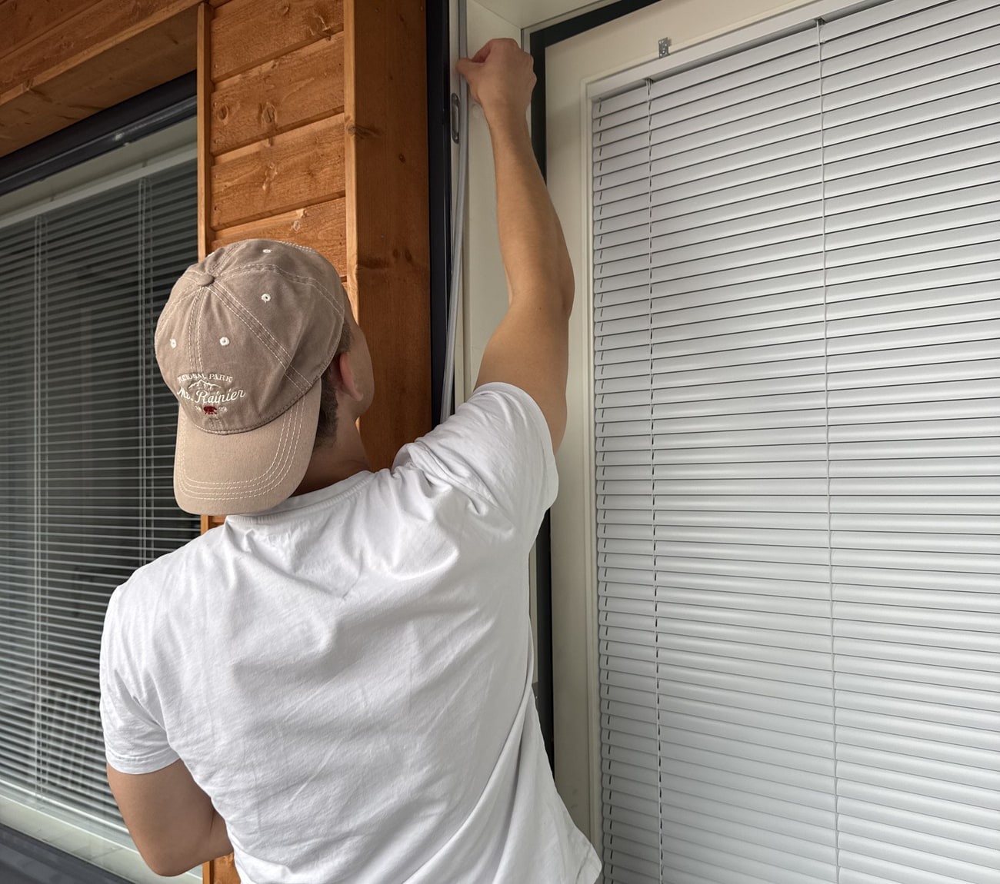

TiivisKoti
2 v takuu · vastuuvakuutettu
Vetääkö ikkunoista
ja ovista? Korjataan
se yhdellä käynnillä.
Vaihdamme ovien ja ikkunoiden tiivisteet kiinteään hintaan — koko Uudellamaalla.
10–15 %arvioitu säästö lämmityskuluissa
−40 %kotitalousvähennys työn osuudesta
0 €lämpökamerakartoitus käynnillä
Ovet ja ikkunat

Karmi- ja puitetiivisteet uusiksi, ovissa myös kynnyskumi
Oven käynnin ja helojen säätö samalla käynnillä
Kiinteä hinta ennen työn alkua — ei yllätyslaskuja
Ikkunan tiivistys · kiinteä hinta
95 €/ ikkuna
Kotitalousvähennyksen jälkeen 68 €
Ulko-ovi 119 € · parvekeovi 119 €
Pienin veloitus 149 € / käynti
Pienin veloitus 149 € / käynti
tiiviskoti.fi
045 875 5996 · info@tiiviskoti.fi
−20 € koodilla
NAAPURI
Skannaa & varaa
Syötä koodi NAAPURI varauslomakkeen Alennuskoodi-kenttään · yksi koodi / talous · hinnat sis. alv 25,5 % · TiivisKoti Oy, Y-tunnus 3414418-4